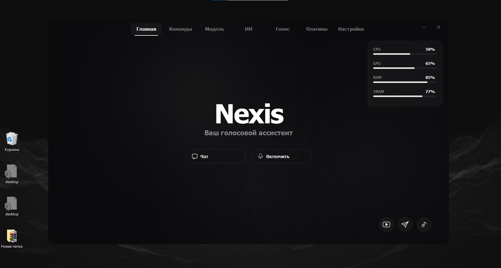
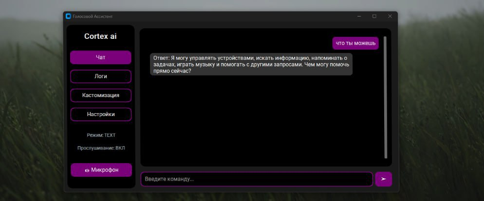

МОИ ПРОЕКТЫ
Архитектурные решения, включающие программные комплексы искусственного интеллекта и продвинутые модули автоматизации.
Программы

[ NEXIS_PREVIEW.PNG MISSING ]Nexis Ai
Продвинутый голосовой ассистент следующего поколения, функционирующий на базе высокопроизводительного ядра C++. Система использует локально развернутые сверточные нейросети для распознавания речи с минимальным временем отклика ядра. Предназначен для глубокой интеграции в закрытые контуры управления.

[ CORTEX_PREVIEW.JPG MISSING ]Cortex Ai
Модульный интеллектуальный голосовой ассистент, полностью спроектированный на экосистеме Python. Программа интегрирует передовые языковые API-модели, обеспечивая гибкий контекстный диалог и быстрое выполнение скриптов автоматизации. Поддерживает кастомные плагины для парсинга.
Телеграм боты
White Bot
Профессиональный асинхронный инструмент для модерации, защиты и комплексного администрирования групповых чатов. Робот оснащен интеллектуальной системой антиспама, механизмами выдачи варнов, мутов и банов. Архитектура поддерживает глобальные федерации черных списков.
DeepSeek | Gemini | Grok 4
Универсальный шлюз нейросетевых экосистем, объединяющий передовые языковые модели в рамках единого интерфейса Telegram. Бот обеспечивает высокоскоростной доступ к архитектурам ИИ. Идеально оптимизирован для написания, рефакторинга и анализа кода.